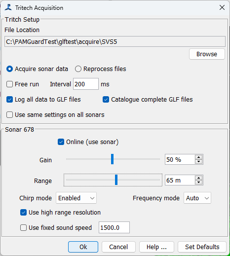
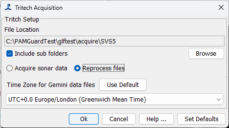

Tritech Acquisition
Once the Tritech plugin and associated libaries are installed, from the File / Add modules menu, select Tritech / Tritech Acquisition.
Only one Tritech acquisition module can be added to a PAMGuard configuration.
Configuration
To configure the module, go to the main PAMGuard settings menu and select Tritech Acquisition / Settings…
The same configuration dialog is used for real time acquisition and processing archived files, but will show different options for each mode of operation.
At the top of the dialog select either Acquire sonar data or Reprocess files.
Acquiring Sonar Data (Real Time Acquisition)

File location
The acquisition module can write sonar data files in the format used by the Tritech Genesis Software. These are files of type .GLF (Genesis log file?). This is the folder on your computer that GLF files will be stored in if you chose to have the module write continuous sonar data to file. See the page on Recording sonar data for more information.
Sonar ping rate (frame rate)
The sonars can generally acquire between 5 and 10 frames per second. This depends on a number of factors including the range you’ve set them to, the number of sonars in use, the quality of the Ethernet connection between your computer and the sonars, and the processing power of the computer. Sonars must ping sequentially, otherwise they interfere with each other. So the more sonars you add, the slower the frame rate will be for each sonar.
Select ‘Free run’ if you want the sonars to ping as fast as they can. In this mode, as soon as data are received from a ping, the command is sent to send the next ping.
Generally though it’s better to set the frame rate you want to work at. This is set as an Interval in milliseconds, i.e. and interval of 200ms will be five frames per second. The Interval is the interval between pings across all sonars, so if you have two sonars operating, and want each one to ping at 5 frames per second, set the interval to 100ms, i.e. a total of 10 pings per second. As with ‘free run’, a subsequent sonar ping will not be sent until the previous one has returned data.
Use the frame rate display to monitor the frame rate. This does tend to ‘glitch’ occasionally, but should mostly be stable. If it’s not stable, then you are probably trying to acquire data at a higher rate than the system can manage.
Logging
If you want the acquisition module to store all sonar data, select ‘Log all data to GLF files’. See the page on Recording sonar data for more information.
PAMGuard has a GLF file indexing system, which significantly speeds up access to data in GLF files when reviewing them in the PAMGuard Viewer. The indexing process can take some time for a big dataset, so it’s best to build the index files as you go, otherwise the index files will be created the first time you open the dataset in PAMGuard Viewer which may take several hours.
Sonar Settings
If you have multiple sonars and want them to all be configured in the exact same way, then select ‘Use same settings on all sonars’. Otherwise, if you un-check this option then a configuration panel for each sonar will appear (this is of course irrelevant for a single sonar).
If you’ve many sonars in your system, you can chose not to read certain sonars by un-checking the Online (use sonar) button.
Select the gain and the maximum range you want from the sonar. If you’re using the detector you can also add Threshold Detector histograms. These provide a graphical representation of the signal levels in the sonar which can be useful in checking that you’ve set the gain appropriately.
‘Chirp mode’, ’ Auto Frequency mode’, and ‘high range resolution’ may not apply to all (older) sonar models. Check the Tritech manuals for the sonar model you are using.
Fixed sound speed: the sonars have a built in sound speed measurement. Generally, it’s best to let the sonar measure it’s own sound speed and to use that when converting time to distance. However, in some environments, or if the sound speed sensor is not working well, operation can be more stable if you select using a fixed sound speed.
File Reprocessing

The module can also be used to re-process data archived to GLF files. In this case select ‘Reprocess files’ near the top of the dialog.
File location: select the folder holding your GLF files. These will probably be arranged in sub folders by date, so you’ll probably want the ‘Include sub folders’ option selected.
Time Zones
The time stamps recorded in GLF files use local time from the computer that the data were collected on. This was decided by Tritech and is different from all other data collection in PAMGuard which uses only UTC time. The module will convert the times read from GLF files to UTC time as the records are read. If the computer processing the data is set to the same time zone as the computer used to collect the data, then you should use that (default) time zone. If however, you are processing data collected in a different time zone (e.g. sent to you by a colleague in a different country) then you should set the time zone for the analysis to that of the computer used to collect the data.